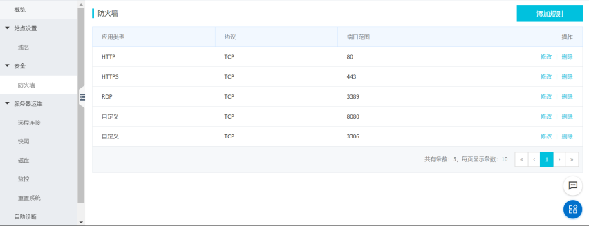
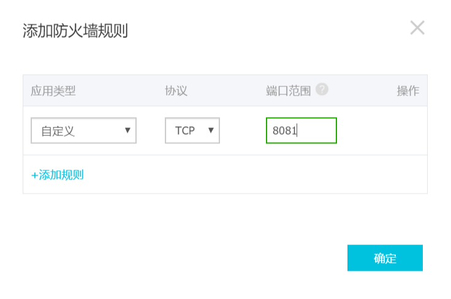
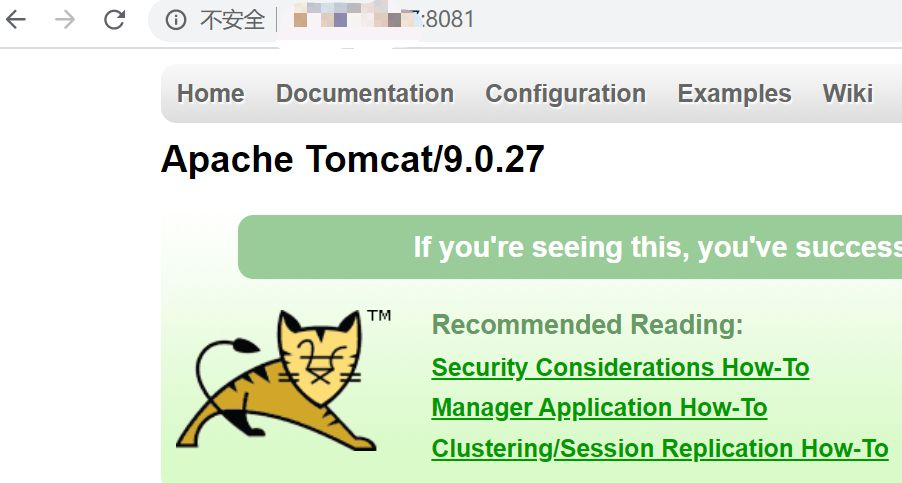
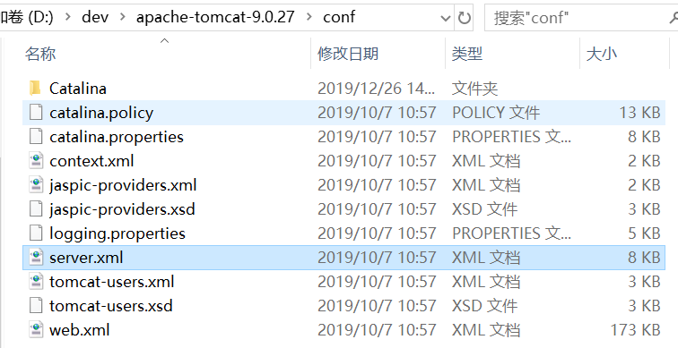
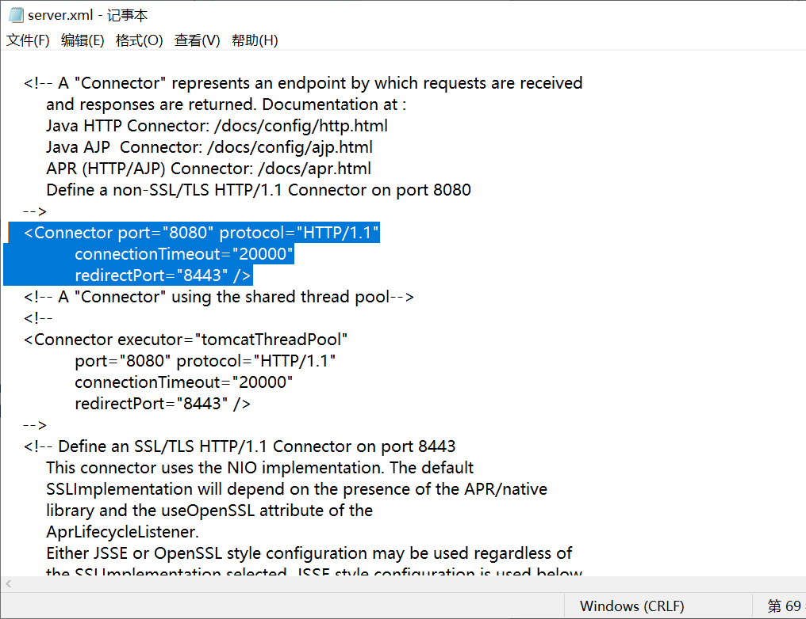

第一步：进入服务器管理控制台
第二步：选择安全所属的防火墙，我们可以看见防火墙选项卡中，并没有我们刚才所访问的8081端口范围

第三步：选择右上方的添加规则，我们不用更改应用类型和协议，只需要在端口范围填写我们的tomcat端口号即可。

第四部，接下来我们再次测试一下之前的网址能否正常访问。

这就成功了！
我们知道tomcat的默认端口号是8080，那么我们如何把端口号改成我们需要的端口号呢？
第一步：找到tomcat所属文件夹下的conf/server.xml文件

第二步：打开server.xml文件，找到，
将port="8080",改为port="8081"。

我们的更改也就完成了。